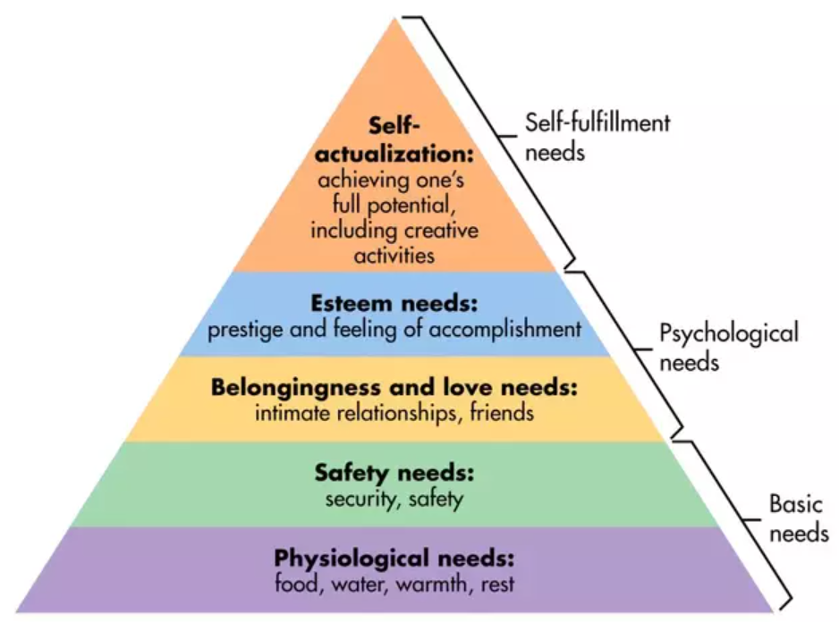

Frederick Taylor
Taylor studied the movements in a job to find wasted effort. Here, the supervisor could follow one purchase from scanning to payment and find out where the line stalls.
Risk: a timer can make cashiers rush and mis-scan items.
Classical, behavioural, and modern approaches look at the same queue from different angles. The manager can use parts of each one.
Classical management is concerned with structure, efficiency, and predictable work. It is useful for a busy checkout, as long as rules leave room for judgement.
Taylor studied the movements in a job to find wasted effort. Here, the supervisor could follow one purchase from scanning to payment and find out where the line stalls.
Risk: a timer can make cashiers rush and mis-scan items.
Fayol focused on how the whole organization is run. For this trial, the shift supervisor should decide who opens the extra till and who handles returns.
Risk: two managers giving different instructions mid-shift.
Weber favoured written rules and clear jobs. A shopper should get the same answer about a refund whichever cashier is working.
Risk: staff may need permission for every small exception.
Useful classical move: write a short checkout checklist, train everyone on it, then let cashiers report steps that slow customers down.
Behavioural approaches remind managers that people seek belonging, respect, and responsibility. A new register will fail if the team has no say in how it runs.
Managers and workers should solve conflicts together. Before changing shifts, the supervisor asks cashiers which hours are difficult and why.
At the store: staff help design the trial schedule.
The Hawthorne studies drew attention to social relationships at work. The cashier team may spot tension or confusion long before it appears in a report.
At the store: five minutes after a shift is enough to hear what happened.
People need security and respect, while Theory Y sees employees as capable of responsibility. Training and a fair roster may motivate more than close supervision.
At the store: a trained cashier can suggest a better queue layout.
The owner could install another register tomorrow. If the same two workers must cover both tills every evening, the plan may shorten the line for a week and then create burnout or errors.
Argyris’s view in the course points in the same direction: treat employees as responsible adults. Explain the goal, invite suggestions, and give them a real part in the change.

Unit 1.7 adds tools for a changing workplace. The store should test a small change before making a costly expansion decision.
Record wait times by hour and compare staffing patterns. Queuing ideas help decide when an extra cashier is worth the cost.
A slow queue might begin with unclear shelf prices or too few bagging spaces. Fixing only the cashier schedule may move the bottleneck.
Friday evenings may need a second register. A quiet morning does not. The plan changes with customer demand.
Track errors and complaints along with speed. Ask staff what went wrong, adjust the process, and check results again.
Try the extra checkout on four busy Friday evenings. Let cashiers decide how to share bagging and returns, then ask what got in their way. Keep the change only if the queue shrinks without more mistakes or an unsustainable wage bill.